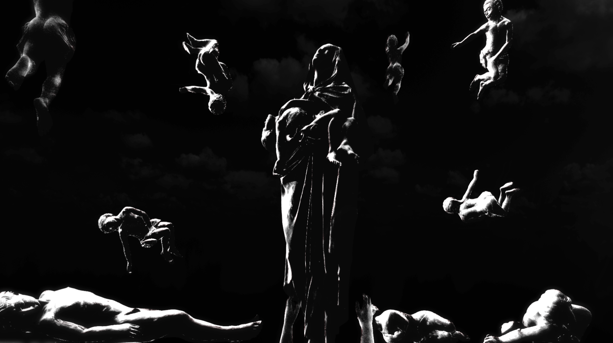

Stabat Mater
Performance che unisce la musica di Pergolesi a una narrazione visiva monocromatica e intensa, in chiave di danza e dolore materno.
Stabat Mater è una performance di danza che fonde il tema della musica di Pergolesi con una narrazione visiva basata su un linguaggio monocromatico, costruito per raggiungere il dolore della madre, un dolore che si estende oltre il singolo gesto personale e si apre alle madri che hanno perso i figli in guerre e conflitti.
Il lavoro ricerca la condizione del lutto come esperienza universale e contemporanea: il dolore della madre, della perdita, della violenza e della fragilità del mondo. La scelta del monocromo diventa un supporto visivo essenziale per avvicinarsi alla purezza della sofferenza, un campo di pensiero astratto e forte, attraverso il quale la presenza del corpo, della voce e dell’immagine si uniscono in una sola tensione.
Il progetto vuole attraversare il tema della maternità e della perdita senza retorica, ma quasi come una testimonianza visiva che guarda alle guerre, ai figli dispersi, ai corpi feriti dal tempo e dalla storia. Il suono di Pergolesi fornisce una struttura di ascolto e di intensità interiore, mentre l’immagine si pone come spazio di memoria, silenzio e resistenza.

In questa ricerca, il nero e il bianco non sono solo una scelta estetica: sono un modo per portare il dolore alla sua essenza, riducendo tutto a una materia emotiva estrema. La visione cerca di far emergere la verticalità del lutto, il silenzio che precede il pianto, la dignità della sofferenza e l’eccezionale potenza della musica come medium di memoria collettiva.
Il progetto resta un work in progress, un campo di esplorazione drammaturgica e visiva che cerca di trasformare il dolore in forma, riconoscendo che la madre che piange il figlio è anche la madre di tutti i figli perduti dalle guerre del presente.
Anno
2026
Formato
Danza / performance visiva
Coreografia
Flavia Buccero
Ballerine
Jole [cognome non disponibile], Grazia Montellione
Temi
Dolore, maternità, guerra, perdita, memoria